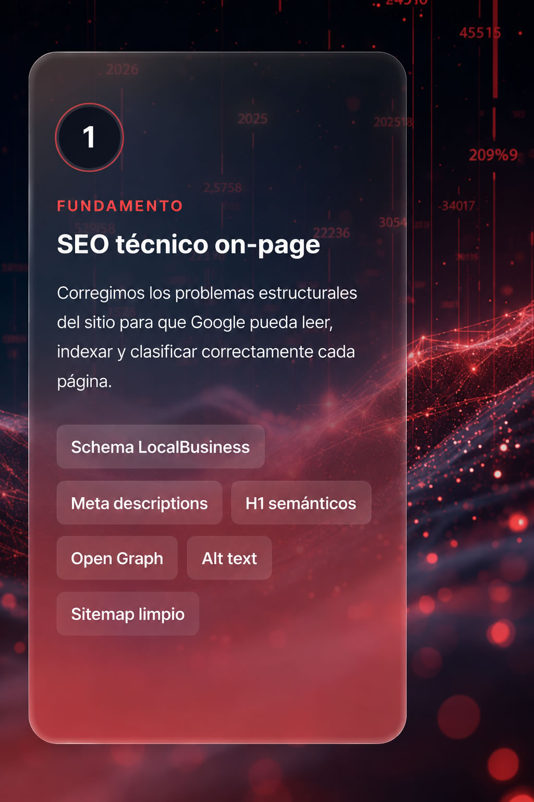
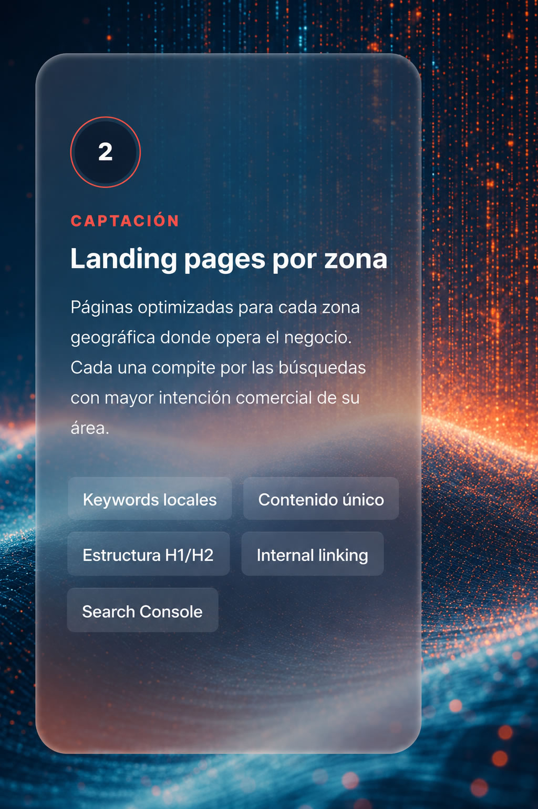
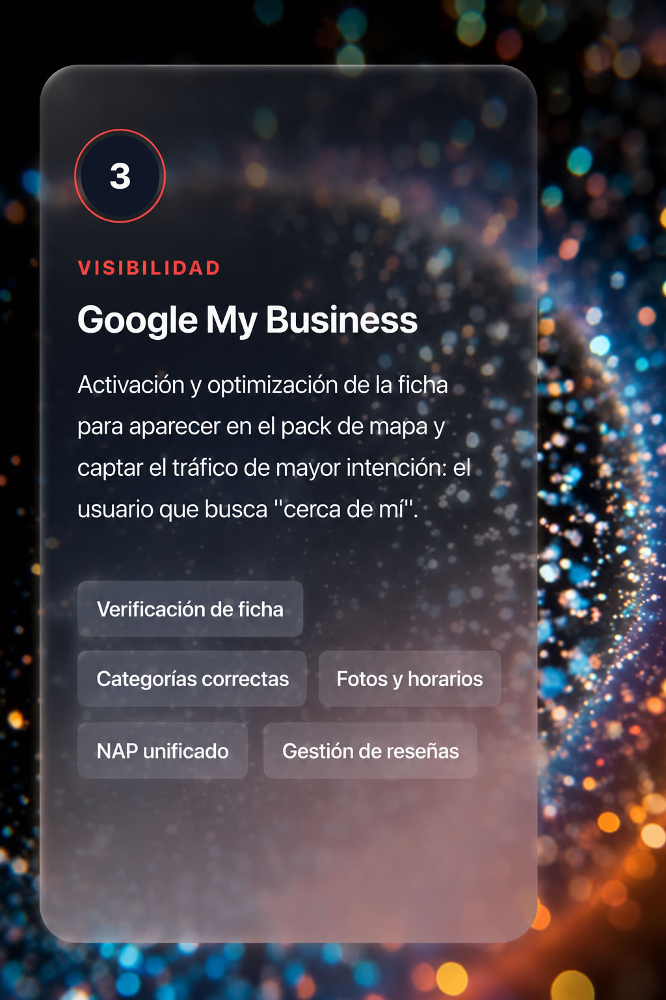

Administración de consorcios
Captación de propietarios y consorcios por zona. Alta intención cuando se evalúa cambio de administrador.
administrador consorcios + zona
Posicionamiento orgánico con IA
Un sistema replicable de SEO Local que pone a tu negocio en la primera página de Google cuando alguien busca el servicio que ofrecés, en tu zona, con intención de comprar.
El contexto
La mayoría de los negocios de servicios tienen un sitio web que no aparece en las búsquedas donde realmente se decide una compra. El tráfico cualificado existe — el problema es capturarlo antes que la competencia.
La solución
Combinamos SEO técnico, contenido geolocalizado y presencia en mapas de Google para que tu negocio aparezca cuando alguien con intención de compra busca tu servicio en tu zona.



Qué se entrega
Todo lo que recibe el cliente al cierre del setup. Cada entregable queda en propiedad del negocio y bajo control de sus propias cuentas.
Análisis completo de problemas técnicos que limitan el posicionamiento: estructura, metadatos, rendimiento, indexación. Listado priorizado de correcciones.
Meta descriptions, H1 semánticos, Schema JSON-LD de negocio local, Open Graph, alt text descriptivo, sitemap optimizado y NAP unificado en todas las páginas.
Hasta 4 páginas optimizadas para las zonas donde opera el negocio. Cada una con keywords locales, contenido único y estructura orientada a conversión.
Verificación o creación de la ficha. Carga de fotos, horarios, descripción y categorías correctas. Protocolo de solicitud de reseñas para clientes actuales.
Submit manual de todas las páginas nuevas para acelerar indexación. Configuración de monitoreo y alertas de rendimiento de búsqueda.
Seguimiento de keywords objetivo, posición en SERPs, tráfico orgánico y rendimiento de cada landing page por zona. Ajustes técnicos según evolución.
Multi-rubro
El SEO local funciona en cualquier negocio que dependa de clientes de zona. Lo que cambia son las keywords, las categorías de GMB y el ángulo del contenido. La metodología es la misma.
Captación de propietarios y consorcios por zona. Alta intención cuando se evalúa cambio de administrador.
Contables, jurídicos, escribanías, arquitectos. Servicios de alto valor donde la zona condiciona la decisión.
Odontología, kinesiología, dermatología, nutrición, veterinarias. Búsquedas con altísima intención de turno.
Inmobiliarias, tasaciones, desarrollos, constructoras. El usuario filtra por barrio antes que por marca.
Restaurantes, cafeterías, catering, salones. El pack de mapa de Google define la elección final.
Plomería, electricidad, climatización, mudanzas, jardinería. Búsquedas urgentes con conversión inmediata.
Metodología
La metodología es industrial: lo que cambia entre un rubro y otro es el insumo (keywords, zonas, categorías). El sistema de implementación es siempre el mismo.
Mapeo de búsquedas locales del sector, análisis de competencia en SERPs y detección de oportunidades de posicionamiento por zona.
Revisión completa del sitio actual. Identificación de bloqueadores de indexación y oportunidades on-page priorizadas por impacto.
Aplicación de correcciones técnicas, publicación de landings geográficas y activación de Google My Business con categorías del rubro.
Monitoreo mensual de posicionamiento, ajustes técnicos, gestión de reseñas y reporte de evolución de tráfico orgánico.
Qué se adapta · Qué no
El sistema base es siempre el mismo. Lo que se ajusta a cada industria es el insumo de contenido y las categorías de búsqueda.
| Variable | Qué se adapta | Ejemplo de aplicación |
|---|---|---|
| Keywords objetivo | Investigación específica del rubro y zona, con foco en términos de alta intención comercial. | "administrador consorcios san isidro" / "estudio contable belgrano" / "odontólogo niños palermo" |
| Categorías de GMB | Selección y orden de categorías de Google My Business propias del sector. | Property management firm, Accountant, Dental clinic, Real estate agency, Restaurant, Plumber. |
| Schema markup | Tipo de Schema JSON-LD específico al negocio: LocalBusiness, Dentist, Restaurant, Attorney, etc. | Mejor presentación en SERPs con horarios, reseñas, rango de precios y servicios destacados. |
| Estructura de landings | Ángulo de copy y prueba social orientados al criterio de decisión del comprador del rubro. | Salud: confianza profesional. Servicios al hogar: rapidez y garantía. Inmobiliario: experiencia en zona. |
| Protocolo de reseñas | Momento y canal de pedido adaptados al ciclo de compra (post-turno, post-servicio, post-firma). | Clínica: al cierre del turno. Restaurante: al pagar la cuenta. Inmobiliaria: al firmar boleto. |
| Lo que NO cambia | Metodología, plazos, stack técnico, estructura de reporte y modelo de pricing. | El cliente recibe siempre el mismo nivel de servicio, con entregables auditables. |
Cronograma estándar
Un setup de cuatro semanas y mantenimiento mensual continuo. Los resultados de posicionamiento orgánico comienzan a verse desde el mes 3.
Inversión
Un único pago de implementación y un mantenimiento mensual de bajo costo. Sin compromisos anuales: cancelable con 30 días de aviso.
Implementación completa del sistema. Setup en 4 semanas desde la firma del contrato.
Monitoreo continuo, ajustes técnicos y reporte mensual de posicionamiento.
Preguntas frecuentes
Todo lo que querés saber antes de avanzar con el setup.
El setup técnico se entrega en 4 semanas. Los resultados de posicionamiento orgánico comienzan a verse desde el mes 3, y se consolidan entre el mes 3 y 6. El SEO no es publicidad paga: requiere maduración, pero el tráfico que llega es más cualificado y sin costo por clic.
El sistema funciona en cualquier negocio de servicios o comercio que dependa de clientes locales: clínicas, estudios profesionales, inmobiliarias, gastronomía, servicios al hogar, estética, educación y comercios de barrio. Lo que cambia entre rubros son las keywords, las categorías de GMB y el ángulo del contenido — la metodología es la misma.
Ads te da tráfico inmediato mientras pagás. SEO te construye un activo que sigue generando consultas aunque pares de invertir. El tráfico orgánico local convierte hasta 3 veces más que el pago, sin costo por clic — pero requiere setup técnico y unos meses de maduración. Lo ideal es combinar ambos: Ads para inmediatez, SEO para sostenibilidad.
No necesariamente. Si tu sitio actual es funcional, lo auditamos y corregimos los problemas técnicos que limitan el posicionamiento. Si el sitio actual tiene problemas estructurales graves, te lo decimos en el diagnóstico inicial y evaluamos la opción más eficiente para tu caso.
Sí. Todos los entregables quedan en propiedad del cliente y bajo control de sus propias cuentas (dominio, hosting, Google My Business, Search Console). Si decidís no continuar con el mantenimiento mensual, el sistema sigue funcionando: vos sos dueño de los activos.
El diagnóstico previo existe exactamente para eso: si tu rubro o tu zona no permite un posicionamiento competitivo razonable, te lo decimos antes de firmar. Trabajamos con metodología documentada y entregables auditables: si el sistema se aplica correctamente, los resultados llegan. Si no llegaran, ajustamos sin costo adicional dentro del mantenimiento mensual.
Sí, en cualquier momento, con 30 días de aviso. No hay compromiso anual. El sistema queda funcionando con el setup inicial — el mantenimiento mensual es para evolucionar el posicionamiento, monitorear keywords y gestionar reseñas de forma activa.
Próximo paso
Diagnóstico inicial gratuito de 30 minutos. Te decimos qué tan posicionable es tu rubro en tu zona y qué resultados esperar antes de invertir un peso.
Dejá tus datos y te contactamos
O escribinos directo por WhatsApp
Nuestro agente IA está disponible 24/7 para responder tus preguntas sobre SEO local y agendar tu diagnóstico.
Hablar con el agente ahora